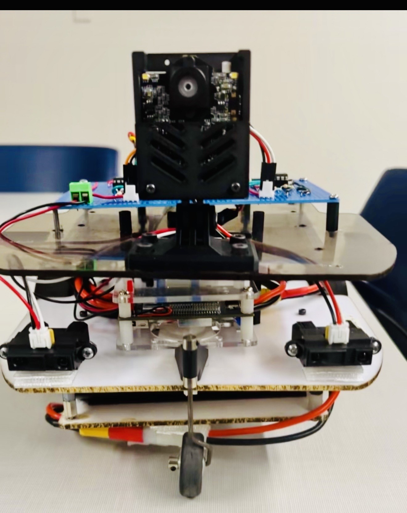
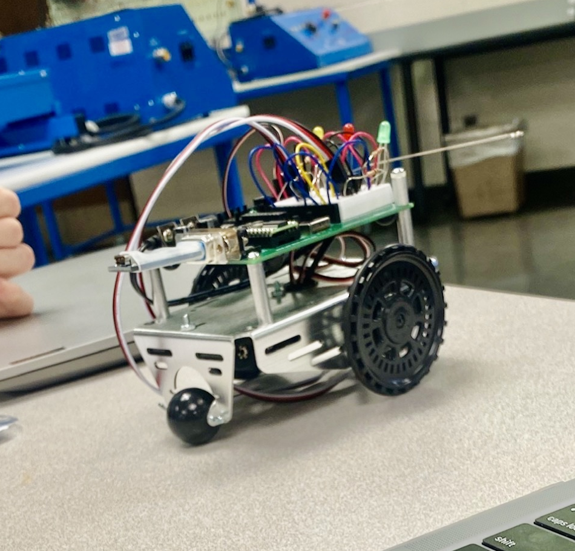

AFROBOT: AN AUTONOMOUS DRIVE PET
AfroBot was developed to explore autonomous robotic behavior through the integration of analog sensing, embedded control, and motor actuation.
The project focuses on three main behaviors:
- Cruise – steady forward motion
- Track – follow a dark-green object
- Escape – obstacle avoidance
These behaviors are coordinated using a subsumption architecture where higher-priority actions override lower-priority ones.
Two Sharp GP2Y0A21YK IR sensors detect obstacles by producing a voltage that increases as objects approach.
A Pixy2 camera outputs an analog X-position signal that guides tracking. All signals are processed through LM324 op-amp stages before reaching the Arduino, which controls two DC motors through a dual H-bridge.
This project demonstrates how sensing and control systems combine to achieve autonomous navigation.
The robot successfully executed all behaviors: maintaining straight motion, detecting obstacles at ~11 cm, and tracking a green object up to 1 meter away.
Despite wiring failures and sensor replacements late in development, AfroBot ultimately operated reliably and met all project requirements.
Explore the Project

Turtle Duck Saltwater Toy
Ashton the Turtleduck 🦆 What started as a simple idea quickly turned into a real engineering challenge.
My team and I designed and built a floating electromechanical system that uses ionized water to complete a circuit and power a motor, applying Ohm’s Law in a very hands-on way.
I worked on the 3D-printed floating design, waterproofing the motor and electronics, and chose materials that wouldn’t fail in water after we ran into corrosion issues with copper.
We tested performance by measuring voltage, current, and mechanical output, which exposed efficiency losses from friction, water resistance, and sealing—great reminders of how theory meets reality.
This project gave me practical experience with mechatronics integration, troubleshooting, and designing systems that actually work outside the lab.
View Project

Boe-Bot King
Boe-Bot King 🤖 Built and programmed an autonomous Boe-Bot robot capable of following a line using dual QTI sensors, focusing on reliable sensor feedback and real-time motion control.
I worked on developing the line-following logic, tuning turn and correction behaviors, and integrating subroutines for forward, turning, reversing, and obstacle recovery using whisker sensors.
One of the biggest challenges was getting consistent sensor readings, which we solved through hands-on troubleshooting by adjusting sensor height and placement rather than relying only on code changes.
Through continuous testing and iteration, we improved speed, stability, and accuracy on the course, gaining practical experience in robotics programming, sensor integration, debugging, and translating theory into working hardware.
View Project